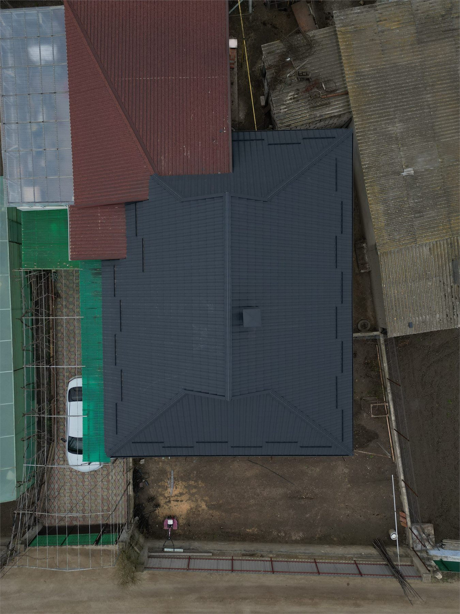
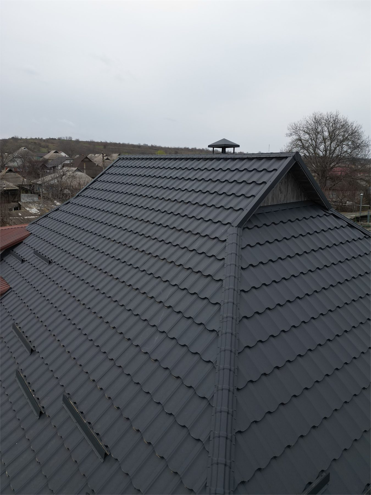
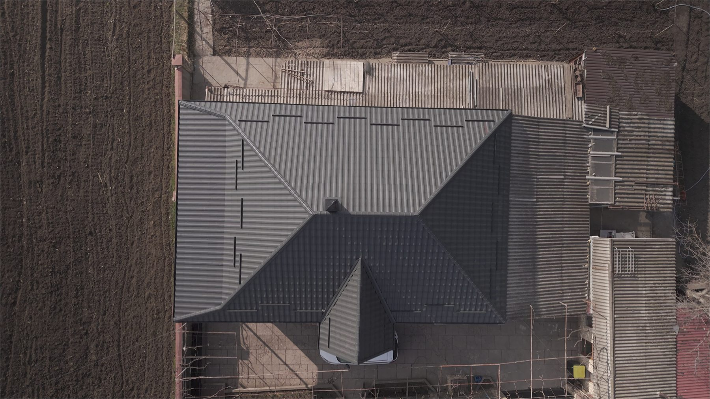
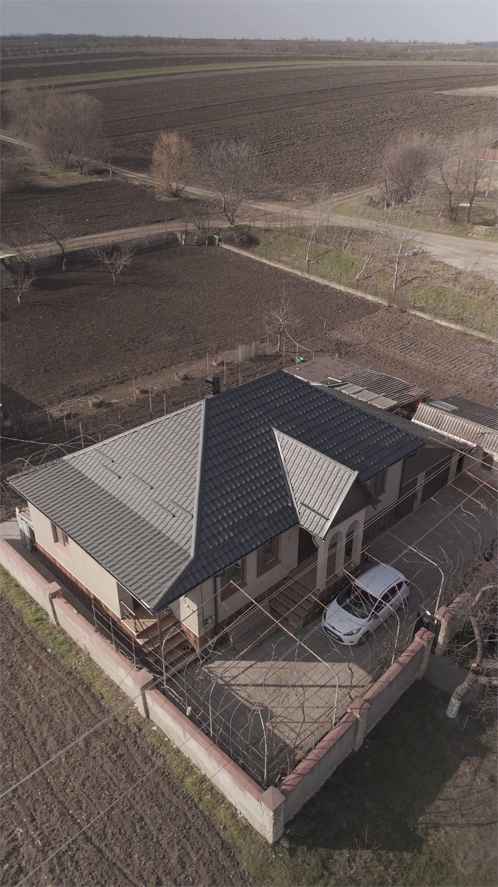

Новый продукт
Модульная металлочерепица
Модульная металлочерепица
для современных кровель с понятной ценой и премиальным видом.
Новая линейка модульной металлочерепицы MoldAcoperis создана для клиентов, которые сравнивают цену, форму и практичность и выбирают современное решение для крыши.
2 эксклюзивные формы, быстрый монтаж, компактная логистика, минимальные потери материала и более простая замена модулей при локальном ремонте.
2 эксклюзивных профиля вне стандартного локального ассортимента
Компактный формат для более простой логистики
Система, рассчитанная на долговечность и простое обслуживание

Понятные преимущества
Преимущества модульной металлочерепицы для тех, кто строит новый дом или меняет крышу без лишних потерь.
Этот блок быстро объясняет, почему модульная металлочерепица - современный, практичный и премиальный выбор.
Быстрый монтаж
Компактные модули проще перемещать на объекте, а темп установки становится более предсказуемым, чем у многих классических решений.
Компактная транспортировка
Модульный формат упрощает логистику, переноску и хранение, особенно при сложном подъезде к объекту или ограниченном пространстве.
Минимальные потери материала
На крышах со сложной геометрией модульная система помогает лучше контролировать отходы и снижать перерасход.
Более простой ремонт
При локальном повреждении модуль заменить легче, чем длинный лист, что часто снижает стоимость ремонта.
Долговечность под ваш бюджет
Можно выбрать толщину стали, цинковый слой и тип покрытия под цели проекта: от сбалансированного варианта до премиум-сегмента.
Премиальный дизайн и эксклюзивность
Новая линейка включает 2 формы, не типичные для местного рынка, что визуально выделяет дом и помогает выйти за рамки стандартного сравнения.
2 эксклюзивные модели
Выберите форму под стиль дома, а не только под бюджет.
Эти 2 профиля - ключевой аргумент отличия на странице: у каждой модели свой характер и понятный сценарий применения.

Model exclusiv 01
Elegant + ArcelorMittal
Elegant + Voestalpine
Elegant
Для современных домов и проектов, где крыша должна выглядеть сдержанно, аккуратно и премиально.
- Более сдержанный и элегантный архитектурный образ
- Отлично смотрится в темных оттенках, особенно в антраците
- Для клиентов, которым важен премиальный вид без излишнего объема
- Легко интегрируется с современными белыми, серыми и комбинированными фасадами
Технические конфигурации для модели Elegant
- Производитель: ArcelorMittal
- Страна: Германия
- Толщина: 0.53 mm
- Покрытие: Hiarc / Ultramat (Polyester Mat)
- Цинкование: 225 Zn
- Гарантия: 40 лет от коррозии / 15 лет на цвет
- Производитель: Voestalpine
- Страна: Австрия
- Толщина: 0.53 mm
- Покрытие: Polyester Mat
- Цинкование: 170 mg
- Гарантия: 50 лет от коррозии / 20 лет на цвет

Model exclusiv 02
Parma + ArcelorMittal
Parma + Voestalpine
Parma
Для жилых домов, которым нужен более выразительный профиль с классическим характером и сильной визуальной подачей.
- Профиль лучше читается с расстояния
- Особенно подходит для коричневых, терракотовых и теплых оттенков
- Делает классические фасады визуально более цельными и пропорциональными
- Сразу выделяет продукт среди стандартных профилей на рынке
Технические конфигурации для модели Parma
- Производитель: ArcelorMittal
- Страна: Германия
- Толщина: 0.53 mm
- Покрытие: Hiarc / Ultramat (Polyester Mat)
- Цинкование: 225 Zn
- Гарантия: 40 лет от коррозии / 15 лет на цвет
- Производитель: Voestalpine
- Страна: Австрия
- Толщина: 0.53 mm
- Покрытие: Polyester Mat
- Цинкование: 170 mg
- Гарантия: 50 лет от коррозии / 20 лет на цвет
Полезное сравнение
Модульная металлочерепица vs классическая металлочерепица
Таблица помогает быстро сравнить варианты и снять ключевые сомнения на этапе выбора.
| Критерий | Модульная металлочерепица | Классическая металлочерепица |
|---|---|---|
| Монтаж | Более гибкий и удобный на объекте | Хорошо подходит для простых и больших скатов |
| Транспортировка | Компактно, проще загружать и переносить | Длинные листы требуют более сложной логистики |
| Потери материала | Ниже на сложных крышах | Могут расти при большом количестве подрезок |
| Локальный ремонт | Отдельный модуль заменить проще | Локализовать и заменить участок обычно сложнее |
| Финальный вид | Премиальный, модульный, с 2 эксклюзивными формами | Более привычный и распространенный |
| Подходит для сложных крыш | Очень хорошо | Допустимо, но менее эффективно по оптимизации |
Почему выбирают этот продукт
Удачный выбор крыши - это не только внешний вид, но и более простая логистика, меньшие потери и меньше проблем в эксплуатации.
Для владельца важна не только цена за квадратный метр. Имеет значение удобство доставки, объем отходов при резке, скорость монтажа и простота локального ремонта.
Модульная металлочерепица хорошо отвечает именно на эти вопросы. Поэтому это практичное решение для новых домов, замены старой кровли и клиентов, которым нужен уровень выше классического варианта.
Галерея / проекты
Реальные проекты с модульной металлочерепицей
Два наглядных примера, которые показывают, как модульная металлочерепица выглядит на готовой крыше: от общего вида до деталей профиля и финишного покрытия.


Проект 01
Модульная кровля для жилого дома
Хороший пример того, как модули интегрируются в современный дом, где аккуратный рисунок кровли и чистые линии важны так же, как надежность и долговечность.


Проект 02
Модульная металлочерепица на крыше большой площади
Проект, в котором хорошо видны фактура, ритм модулей и то, как профиль сохраняет премиальный внешний вид на заметных и открытых участках кровли.
FAQ SEO
Частые вопросы о модульной металлочерепице
Ответы написаны для реального клиента: просто, по делу и с пользой для принятия решения.
Что такое модульная металлочерепица?
Это кровельная система из компактных модулей, рассчитанная на более гибкий монтаж, простую логистику и меньшие потери материала по сравнению со многими классическими решениями.
Какие основные преимущества у модульной металлочерепицы?
Ключевые плюсы: быстрый монтаж, компактная транспортировка, минимальные отходы, более простой локальный ремонт и премиальный внешний вид, особенно на сложных крышах.
В чем разница между модульной и классической металлочерепицей?
Модульный вариант состоит из более мелких элементов и лучше подходит для оптимизации и обслуживания. Классический вариант привычен, но на сложной геометрии может быть менее эффективным по потерям и монтажу.
Модульная металлочерепица монтируется быстрее?
Во многих проектах - да. Модули проще в работе на объекте, что помогает ускорить монтаж, особенно на крышах со сложной конфигурацией.
Насколько долговечна модульная металлочерепица?
Долговечность зависит от толщины стали, уровня цинкования и защитного покрытия. Поэтому внешне похожие продукты могут отличаться по ресурсу эксплуатации.
Сколько стоит модульная металлочерепица?
Цена зависит от профиля, толщины, покрытия, аксессуаров, цвета и сложности крыши. Для объективного сравнения важно считать материал вместе с монтажом и возможными потерями.
Подходит ли она для нового дома и замены старой крыши?
Да. Это хорошее решение как для нового строительства, так и для замены существующей кровли, особенно если нужен современный и удобный в обслуживании вариант.
Как обслуживать крышу из модульной металлочерепицы?
Рекомендуются периодические осмотры, очистка чувствительных зон и проверка крепежа и водоотвода. Модульная система упрощает локальные вмешательства при необходимости.
Для каких типов крыш она рекомендуется?
Подходит и для простых кровель, но особенно эффективна на сложных: с пересечениями, выступами, мансардными окнами и большим количеством подрезок.
Запросить предложение
Хотите понять, какой вариант модульной металлочерепицы подойдет именно вашему дому?
Оставьте базовые данные, и мы вернемся с рекомендацией с учетом вашего города и желаемого бюджета.
Без спама и лишней сложности: предлагаем премиум-решение только тогда, когда оно действительно оправдано вашим проектом.
Внутренние ссылки
Продолжите сравнение или запросите информацию под ваш проект
Калькулятор крыши
Получите ориентировочный расчет площади и бюджета вашей кровли.
Кровельные аксессуары
Дополните систему коньками, ендовами, планками и другими совместимыми элементами.
Монтаж кровли
Узнайте, как мы выполняем замену или полный монтаж новой крыши.
Блог / руководства
Читайте полезные статьи о выборе толщины, цвета и подходящей кровельной системы.